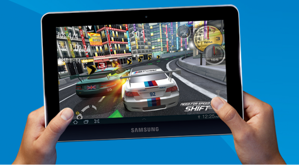

Вообще ленился писать о подарке, который выбрали сыну на 10-летие, но вчерашнее событие, которое перетекло в сегодняшние события стоило бы упомянуть, поэтому можно рассматривать данный пост как приквел.
Итак, в начале января, сыну собралось стукнуть 10 лет. Несмотря на скромный ещё возраст сын купается в роскоши и имеет уже практически всё. Пластмассовый самолёт, подставка под книги, много мягких игрушек, плакат со сценой из какого-то боевика… Казалось что ещё можно желать. Сам сын желал телефон «СамсунгАндроидЭйчТиСи», но ввиду того, что просто «самсунг» уже был несколько раз терян, покупку нового решено отложить до более сознательного юбилея (ну или пока он не догадается потерять этот окончательно).
В погоне на дюймами
Решили планировать планшет. Планшеты, конечно, скоро будут у всех детей, но пока, к сожалению, цена на них держится ещё на не волне доступном даже для взрослых рубеже. Из-за этого сожаления поехали приглядывать что-нибудь скромное, 7-дюймовое.
Самый большой выбор планшетов в Кемерове в ДНСе. Повертели в салоне на Октябрьском несколько штук в руках и окончательно убеделись — 7 дюймов (вы же помните, что мы о диагонали планшета?) всё-таки ни о чём. Эту штуку (особенно в чехле) уже не потаскаешь с собой везде без сумки, а размеры экрана всё ещё недостаточны для комфортной работы, отдыха, ну и всего остального, для чего может пригодиться планшет.
Рынок 10-дюймовых планшетов вроде богаче. Но это только на первый взгляд. Отбрасываем откровенно страшные, отодвигаем устаревшие, не тычем пальцами в планшеты с резистивными экраны (их впрочем уже почти нет), не заглядываемся на новинки с соответствующей новинкам ценой. В остатке остаётся… У нас осталось две модели: Ipad2 и Samsung Galaxy Tab.
Остановились на самом недорогом. Samsung Galaxy Tab 10.1 16gb (без 3G)

Тестирование, недостатки и достоинства планшета Samsung Galaxy Tab
Планшет, да планшет. Что тут тестировать?
Ограниченный выбор
Выбор планшета я сопровождал вопросами и комментариями в твиттере, так вот люди вполне ясно недоумевали по поводу целесообразности приобретения планшета без 3G, в духе «планшет без 3G — это просто кирпич». На поводу у людей я не пошёл, и вот почему. Планшет я покупал не людям и даже не себе. Планшет сыну. Носить планшет куда-то из дома ему незачем (в качестве отступления стоит заметить, что один раз он, не предупредив, сносил его в школу :)), дома вайфай, 3G — это +5500 к стоимости. Ради эфемерной возможности выйти в интернет раз в месяц? Эта, возникшая раз в месяц потребность (я отвозил заказанную на kemigra.ru игру в конец 13-линии) была с успехом удовлетворена, ставшим хотспотом, телефоном LG p500, который, кстати, подешевел за год процентов на 40.
Покупка планшета, разумеется, была абсолютно некорректным поступком в отношении родителей друзей и одноклассников сына. Я отлично понимаю, что планшет за 18850 рублей не игрушка недешёвая игрушка. У меня у самого нет такого. Но редкий подарок для сына может принести пользу всей семье, а это кажется именно тот случай.
Продолжение следует
p.s. Вчера, прослужив верой, правдой и планшетом целый месяц планшет Samsung Galaxy Tab перестал включаться.